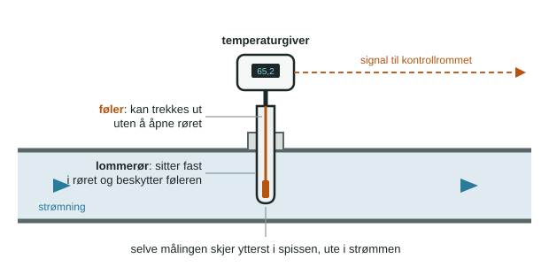

Temperaturmåling
Mange prosesser går bare riktig ved én bestemt temperatur. Blir en reaktor for varm, kan reaksjonen løpe løpsk. Blir den for kald, blir det lite produkt. Her lærer du hvordan temperaturen måles i anlegget, hvorfor føleren sitter i et lommerør, og hvorfor en temperaturmåling kan henge etter.
Hvorfor måler vi temperatur?
Noen eksempler fra anlegget:
- I en reaktor avgjør temperaturen hvor fort reaksjonen går, og hvilket produkt du får.
- Ved en varmeveksler viser temperaturen inn og ut om den varmer eller kjøler som den skal.
- I en destillasjonskolonne viser temperaturen på ulike høyder om stoffene skilles som de skal, for eksempel om toppproduktet er rent nok.
- På lagertanker må noen stoffer holdes varme for ikke å stivne, og andre kalde for ikke å fordampe.
Hva temperatur er, og forskjellen på celsius og kelvin, lærer du på siden Temperatur og varme i Fysiske prinsipper.
Bimetalltermometeret: den lokale måleren
Ute i anlegget er den vanligste lokale temperaturmåleren et bimetalltermometer. Det ser ut som et manometer, med viser og skala.
Inne i termometeret sitter to tynne strimler av ulike metaller som er festet sammen. Når de blir varme, utvider de seg, men ikke like mye. Da bøyer strimmelen seg. Strimmelen er rullet opp som en spiral, så den vrir seg når temperaturen endrer seg. Viseren sitter på spiralen og følger med rundt.
Et bimetalltermometer trenger ikke strøm, men det kan bare leses av på stedet. Glasstermometre, som du kjenner fra laben, brukes nesten ikke i anlegget fordi de lett knuser.
Elektriske temperaturfølere
Skal temperaturen vises i kontrollrommet, brukes en elektrisk føler. De to vanligste er motstandsføleren Pt100 og termoelementet.
Motstandsføleren Pt100
En Pt100 er en liten tråd eller film av platina. Platina leder strøm litt dårligere når det blir varmere. Det vil si at den elektriske motstanden øker med temperaturen. Navnet forteller hvordan føleren er laget: Pt er platina, og 100 betyr at motstanden er 100 ohm (Ω) ved 0 °C. For hver grad det blir varmere, øker motstanden med ca. 0,385 Ω.
Pt100 er svært nøyaktig og er den vanligste føleren i prosessindustrien ved vanlige temperaturer.
Oppgave: En instrumenttekniker måler motstanden i en Pt100 til 123,2 Ω. Omtrent hvilken temperatur har føleren?
Løsning:
- Ved 0 °C er motstanden 100 Ω. Økningen er \( 123{,}2 \text{ Ω} - 100 \text{ Ω} = 23{,}2 \text{ Ω} \).
- Hver grad gir ca. 0,385 Ω. Antall grader er \( \dfrac{23{,}2 \text{ Ω}}{0{,}385 \text{ Ω/°C}} \approx 60 \text{ °C} \).
Svar: Ca. 60 °C. I praksis gjør temperaturgiveren denne utregningen selv. Den viser temperaturen direkte og sender den videre.
Termoelementet
Et termoelement består av to tråder av ulike metaller som er sveiset sammen i spissen. Når spissen blir varmere enn den andre enden av trådene, lager termoelementet en liten elektrisk spenning. Jo større temperaturforskjellen er, jo høyere blir spenningen.
Termoelementer er robuste og tåler svært høye temperaturer, over 1000 °C. De brukes derfor i ovner, kjeler og smelteverk. De er litt mindre nøyaktige enn Pt100.
| Måler | Hvordan den virker | Typisk bruk |
|---|---|---|
| Bimetalltermometer | To metaller utvider seg ulikt, og en spiral vrir viseren | Lokal avlesning ute i anlegget |
| Pt100 | Motstanden i platina øker med temperaturen | Nøyaktig måling, fra langt under 0 °C og opp til noen hundre grader |
| Termoelement | To metaller sammen gir en liten spenning når spissen er varmere enn den andre enden | Høye temperaturer, over 1000 °C |
Føleren kobles til en temperaturgiver. Den gjør motstanden eller spenningen om til en temperatur, og sender den som et signal til styresystemet. Hvordan signalet sendes, lærer du i emnet Signaler og instrumentering.
Lommerøret

En temperaturføler står sjelden direkte i væsken. Den står inne i et lommerør, et lukket metallrør som er sveiset eller skrudd fast i prosessrøret eller tanken. Lommerøret
- beskytter føleren mot trykk, slitasje og etsende stoffer
- gjør at du kan trekke ut og bytte føleren uten å stoppe anlegget eller åpne prosessen
Spissen av lommerøret må stå godt ute i strømmen. Sitter den i en krok der væsken står stille, eller bare så vidt stikker inn, måler den ikke den riktige temperaturen.
Temperaturmålingen henger etter
Varmen må først gå gjennom veggen i lommerøret og inn i føleren før føleren merker en endring. Derfor viser en temperaturmåling alltid en forandring litt for sent. Hvor lang tid det tar, kalles responstiden. For en føler i et lommerør kan den være fra noen sekunder til mer enn et minutt.
Det betyr at temperaturen i prosessen kan ha steget mer enn skjermen viser. Det er viktig å vite når du følger med på en reaktor der temperaturen kan stige fort.
Når temperaturmålingen viser feil
- Belegg på lommerøret. Et lag med avleiringer isolerer lommerøret. Målingen blir tregere og viser ofte for lavt i en varm prosess.
- Føleren står ikke helt inne i lommerøret. Da er det luft mellom spissen av føleren og bunnen av lommerøret. Luft leder varme dårlig, så føleren reagerer tregt og viser ofte for lavt i en varm prosess.
- Feil plassering. Spissen står i en død krok eller for nær veggen, og ikke ute i strømmen.
- Brudd i føleren eller ledningen. Temperaturen på skjermen hopper plutselig til høyeste eller laveste verdi i måleområdet. En slik plutselig, urimelig endring tyder oftest på feil i måleren, ikke i prosessen.
På en tank sitter både et bimetalltermometer og en temperaturgiver. Termometeret ute ved tanken viser 72 °C, men på skjermen står det 64 °C. Prosessen har gått jevnt lenge, så det er ikke treghet som er forklaringen.
Hva kan være feil? En av dem viser feil. Det kan være at føleren til giveren er dratt litt ut av lommerøret og viser for lite, eller at termometeret er skadet. Meld fra, så kan instrumentfolkene sjekke begge mot en måler som er kalibrert.
Sammenlign med det du ellers vet. Temperaturen ut av en varmeveksler skal ligge mellom temperaturene på det varme og det kalde mediet inn. Ligger den utenfor, er det trolig en målefeil.
- Føleren kan trekkes ut av lommerøret mens anlegget går. Lommerøret i seg selv må aldri skrus løs mens røret har trykk eller inneholder væske.
- Lommerør, følere og rør kan være svært varme. Bruk hansker, og sjekk temperaturen på skjermen før du tar på utstyret.
- Følg bedriftens prosedyre og arbeidstillatelse når du bytter en føler.
- Husk at målingen henger etter. Stiger temperaturen raskt, kan den i virkeligheten være høyere enn skjermen viser.
Test deg selv
Hva er motstanden i en Pt100 ved 0 °C?
- 0 Ω
- 100 Ω
- 385 Ω
Tallet 100 i navnet betyr 100 Ω ved 0 °C. Motstanden øker med ca. 0,385 Ω for hver grad.
Du skal måle temperaturen i en ovn på 900 °C. Hvilken føler passer best?
- Bimetalltermometer
- Pt100
- Termoelement
Termoelementer tåler over 1000 °C og brukes i ovner og kjeler. Pt100 brukes ved lavere temperaturer.
Hvorfor står temperaturføleren i et lommerør?
- For at den skal reagere raskere
- For at den kan byttes uten å åpne prosessen, og for å beskytte den
- For at den skal vise høyere temperatur
Lommerøret beskytter føleren og gjør at den kan trekkes ut mens anlegget går. Ulempen er at målingen blir litt tregere.
En Pt100 har motstanden 119,3 Ω. Omtrent hvilken temperatur er det?
- 19 °C
- 50 °C
- 119 °C
Økningen er 119,3 − 100 = 19,3 Ω. Hver grad gir ca. 0,385 Ω, så temperaturen er ca. 19,3 / 0,385 ≈ 50 °C.
Temperaturen på skjermen hopper plutselig fra 65 °C til høyeste verdi i måleområdet. Hva er mest sannsynlig?
- Reaksjonen har løpt løpsk på et sekund.
- Det er brudd i føleren eller ledningen.
- Lommerøret har fått belegg.
Temperaturen i en tank eller et rør endrer seg ikke så brått. Et plutselig hopp til ytterkanten av måleområdet tyder på feil i måleren. Belegg gir en langsom feil, ikke et hopp.
Ordliste
| Begrep | Forklaring | Engelsk |
|---|---|---|
| temperaturføler | Den delen av en temperaturmåler som merker temperaturen, for eksempel en Pt100 eller et termoelement. | temperature sensor |
| temperaturgiver | Instrument som gjør signalet fra en temperaturføler om til en temperatur og sender den til styresystemet. | temperature transmitter |
| bimetalltermometer | Termometer med viser der to metaller som utvider seg ulikt, vrir en spiral når temperaturen endrer seg. | bimetal thermometer |
| Pt100 | Temperaturføler av platina der motstanden er 100 Ω ved 0 °C og øker når det blir varmere. | Pt100 / RTD |
| termoelement | Temperaturføler av to ulike metaller som er sveiset sammen i spissen. Den lager en liten spenning når spissen har en annen temperatur enn den andre enden. Tåler svært høye temperaturer. | thermocouple |
| motstand | Hvor vanskelig det er for elektrisk strøm å gå gjennom et materiale. Måles i ohm (Ω). | |
| lommerør | Lukket metallrør som sitter fast i prosessen. Temperaturføleren står inne i det, så den kan byttes uten å åpne prosessen. | thermowell |
| responstid | Tiden det tar før en måler viser nesten hele en endring i prosessen. | response time |
Les mer
- Temperatur og varme i Fysiske prinsipper forklarer hva temperatur er.
Om kildene: Teksten, eksemplene og figuren på denne siden er laget for dette nettstedet. Siden bygger på undervisningsopplegg i kjemiprosess- og laboratoriefag ved Sauda vgs, som er utarbeidet med utgangspunkt i blant annet Kjemien stemmer, Laboranten og åpne nettkilder.